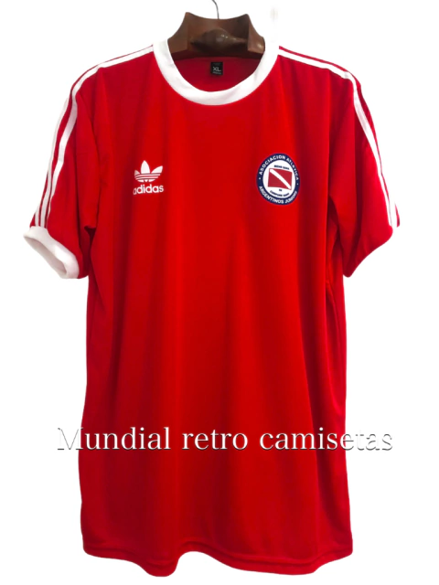

Remera Argentina campeona del mundo en 2022
Camiseta conmemorativa de la selección Argentina campeona del mundo en Qatar 2022. Diseño con detalles y colores de aquella histórica campaña.
$80.000
Camiseta conmemorativa de la selección Argentina campeona del mundo en Qatar 2022. Diseño con detalles y colores de aquella histórica campaña.
$80.000

Camiseta retro de San Lorenzo, campeón de la Copa Libertadores 2014. Diseño histórico de aquella memorable temporada del Ciclo de Oro.
$80.000

Camiseta retro de Chacarita Juniors con el clásico diseño a rayas verticales. Prenda emblemática del club, perfecta para coleccionistas de fútbol argentino.
$80.0000

Camiseta negra del Manchester City temporada 2023/24. Diseño alternativo del club inglés, icónico para los seguidores de los Sky Blues.
$80.0000

Camiseta retro del PSG x Jordan, cuarta equipación temporada 2019/20. Diseño negro con la icónica franja vertical en los colores de Francia, prenda clásica de la era dorada parisina.
$80.0000

Camiseta retro de Argentinos Juniors, temporada 1998. Diseño rojo y blanco con el clásico estilo Adidas de la época dorada del club.
$80.0000

Camiseta retro del Atlético Madrid, temporada 2014. Diseño de rayas rojas y blancas con el escudo y cuello azul marino, época del resurgimiento colchonero.
$80.0000

Camiseta retro de la Selección de Brasil, temporada 2004. Diseño clásico amarillo y verde con el número 10, icónico del fútbol brasileño.
$80.0000

Camiseta retro del Liverpool FC, temporada 1998. Diseño rojo con patrocinio Carlsberg y detalles técnicos Adidas, prenda emblemática de los Reds.
$80.0000

Camiseta retro de la AS Roma, temporada 2017. Diseño granate con los colores tradicionales del club romano y detalle amarillo en los hombros.
$80.0000